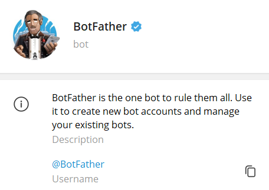
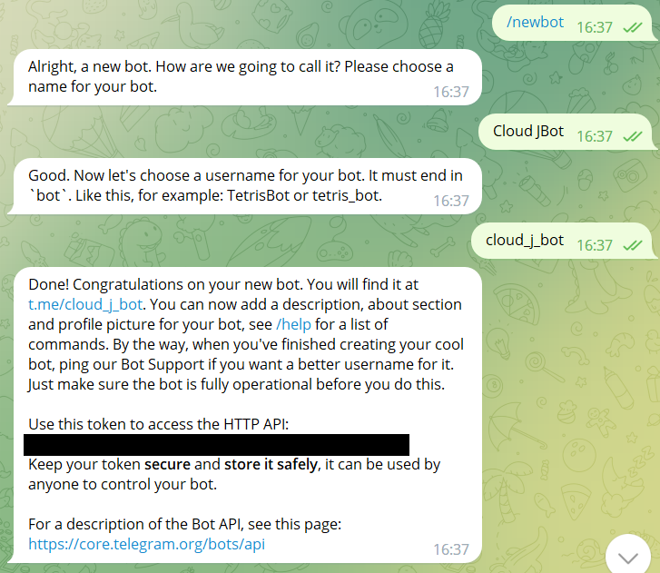
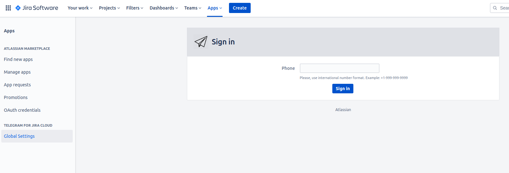
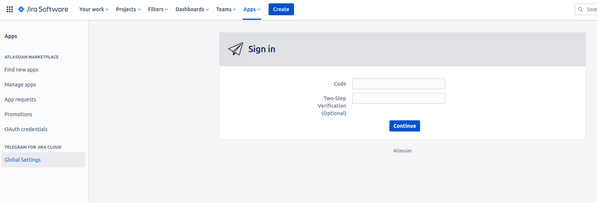
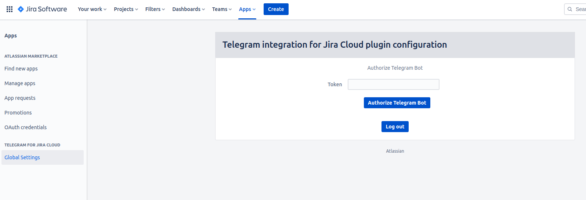

Administrator guide
Follow the next steps to configure Telegram Integration For Jira:
Note: successful usage of Telegram Integration requires a Telegram account and created bot via BotFather.
How to create a new bot:
-
Find BotFather in Telegram.

-
Enter a /newbot command.

-
Follow BotFather instructions.
-
Receive a message from BotFather with your new bot data.
User authorization:
-
After installing the plugin click on "Configure" or "Global Settings".
-
Then you need to log in to your Telegram account.
You will be authenticated as an admin, so your account will be used for sending confirmation messages during other users registration.
Enter the phone number associated with your Telegram account in the "Phone" field and click on "Sign in" button.

-
You will receive a message with the code from Telegram. Enter the code in the "Code" field.
-
If your Two-Step verification is enabled, enter your password for it.

-
Congratulations! You successfully logged in to your Telegram account! Now you need to authorize a bot, that you've created.
How to authorize a Bot:
-
Go to your Telegram chat with BotFather.
-
Find a message from BotFather with your new bot data, or enter a /token command and follow the instructions.
-
Copy your bot token and insert it in the "Token" field on the configuration page.
-
Click "Authorize Telegram bot" button.

How to activate your bot:
-
After authorising your bot in Jira, you will see a link to your bot.
-
Insert it into the Telegram search field and find your Bot.
-
Press "Start" to activate the bot.

That's it! The Plugin is configured now!
Note: An Admin account and Bot are required for the plugin to work. If you press "Log out" button, the plugin will stop working! And most importantly, do not remove the bot!